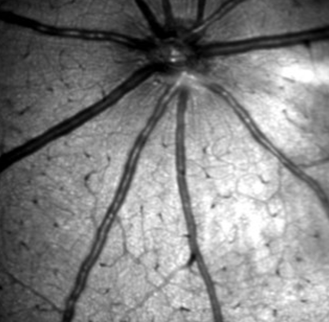
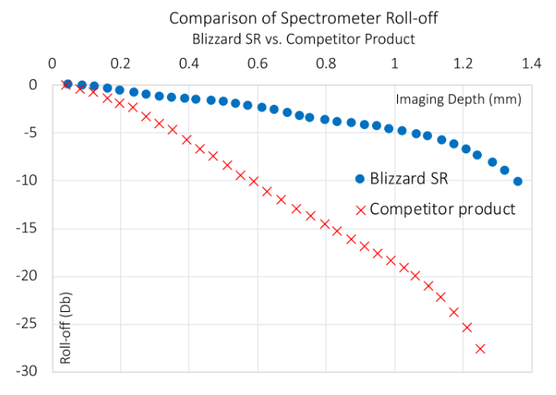

What is Vis-OCT?
Visible-light optical coherence tomography (vis-OCT) is the latest development of OCT, providing new capabilities in anatomical and functional imaging of biological tissue.

The Legacy
Standard OCT
Traditional OCT transformed clinical care, but its reliance on near-infrared light limits functional and anatomical data collection.
The Frontier
Vis-OCT
By shifting to visible light illumination, vis-OCT pushes past traditional boundaries, unlocking new capabilities for research and clinical care.
The Pioneers
Born from Research
Invented at Northwestern University in 2013 by Professor Hao F. Zhang's lab, vis-OCT powers the ultra-high resolution of our flagship Blizzard spectrometer.
What sets our technology apart?

Functional Imaging
Functional Imaging of the Retina
Thanks to the improved optical contract in the visible-light spectral range, our technology offers new functional analyses of the retina like no other.

Small Animals
Revolutionary Small Animal Imaging
Our systems provide the best functional and anatomical ocular imaging of both anterior and posterior segments of small animal eyes.

Retina
Highest Resolution Retinal Imaging
Our technology is capable of a 1.3 micrometer axial resolution in the human eye, nearly 3x higher than current state-of-the-art clinical OCTs.
Research
Enabling Advanced Research
Our vis-OCT systems are currently being evaluated through IRB-approved research studies at major institutions worldwide. The unprecedented resolution and functional imaging capabilities are helping researchers better understand the mechanisms of blinding diseases.
View our research →


Performance
Unmatched Resolution
Our systems capture micron-scale details with astonishing clarity. Browse through our samples to see the level of precision we deliver across varying materials, surface textures, and complex geometries.


Imaging
The Power of Blizzard SR
We've designed the Blizzard SR to have the best-in-class performance, featuring a far superior roll-off performance, high signal-to-noise, and an ideal point spread function. Research with the Blizzard SR has a much improved resolution of anatomical structures and improved homogeneity of spectra quality over varying depths.
Blizzard SR Documentation →